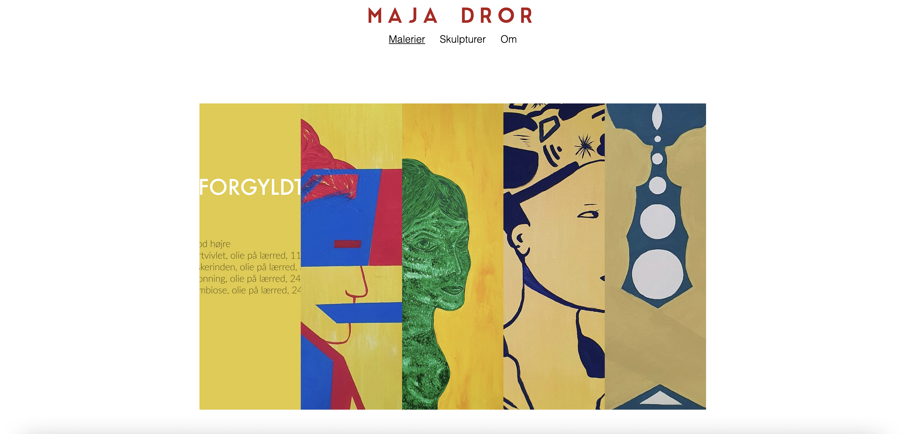
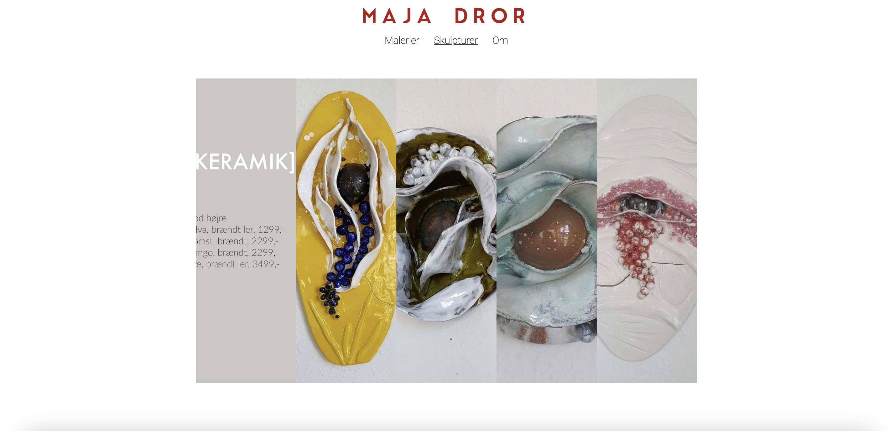

I Redesign-projektet lærte jeg hvor vigtig god og grundig forarbejde
er. Både for en selv men også for den rigtige virksomhed, som vi
arbejdede sammen med. I gruppen fik vi lov at arbejde med hele
processen - fra virksomhedsanalyse til at stå med et færdigt
redesign som afspejlede virksomhedens profil bare forbedret med
vores tillærte teorier.

